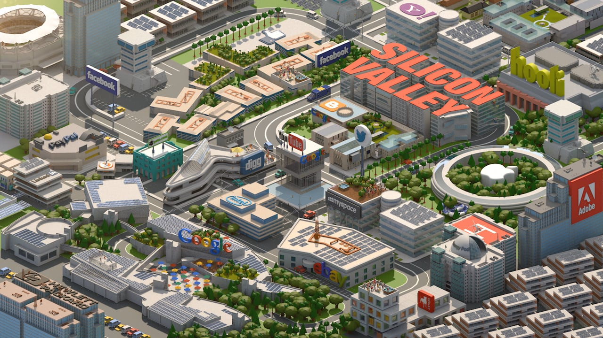
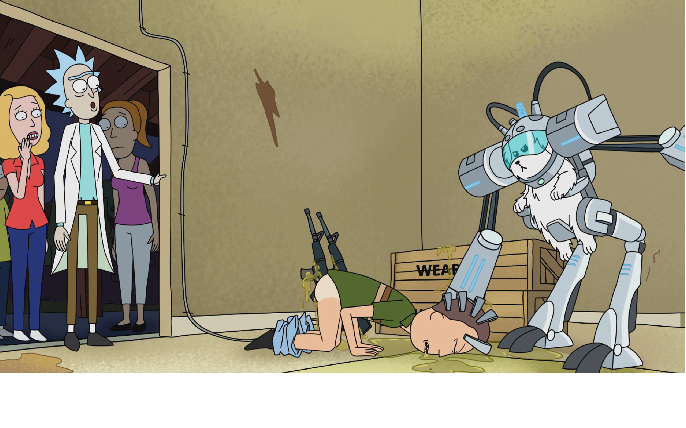
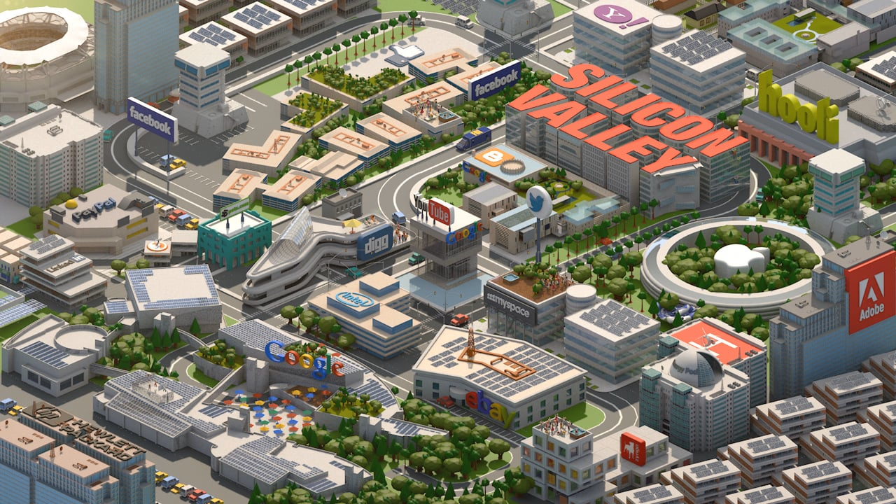
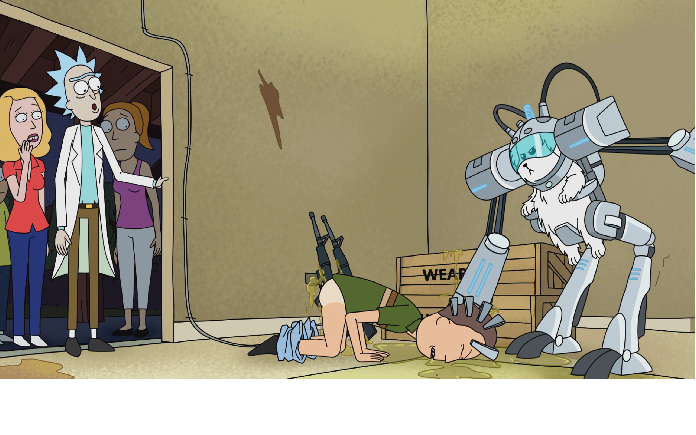

I have always wanted to have a
'Death to America!' slide. Maybe I should just say 'de-americanize'.
As a naturalized US citizen, whose citizenship can potentially be revoked by court order, let me just say America is the greatest country on Earth, and I am lucky to live there. I am sorry that you can't live there too.
This
festive map shows seismic hazard in Northern California, where pretty much all the large Internet companies are based, along with a zillion startups.
Now of course, each company has four zillion datacenters, backed up across the world. But how much will that matter when there's a major quake, and
Silicon Valley can't get to work for a month? All of these headquarters are going to be shut down for a long time when the Big One comes. You're going to notice it.
So even if you don't agree with my politics, maybe you'll agree with my geology. Let's not build a vast, distributed global network only to put everything in one place!
I'm tired of being scared of what the web is going to look like tomorrow.
One of the worst aspects of surveillance is how it limits our ability to be creative with technology. It's like a tax we all have to pay on innovation. We can't have cool things, because they're too potentially invasive.
Imagine if we didn't have to worry about privacy, if we had strong guarantees that our inventions wouldn't immediately be used
against us. Robin gave us a glimpse into that world, and it's a glimpse into what made computers so irresistible in the first place.
I have no idea how to fix it. I'm hoping you'll tell me how to fix it. But we should do something to fix it. We can try a hundred different things. You people are designers; treat it as a design problem! How do we change this industry to make it wonderful again? How do we build an Internet we're not
ashamed of?
Thank you for your kind attention today. I hope you had a wonderful conference.
[
stormy, prolonged applause.]
 


